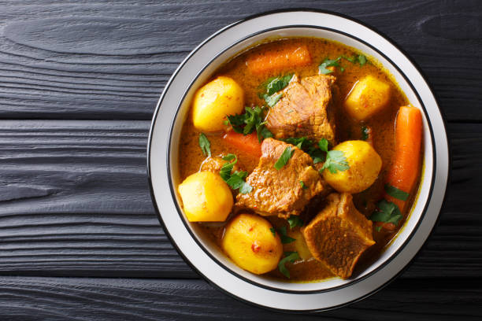

Beef Curry Recipes

Description
Make our easy beef curry and serve with a hunk of naan bread to mop up the delicious juices. If you prefer it less spicy, simply add less chilli powder
Ingredients
- 2 tbsp oil
- 500g diced braising steak
- 1 tbsp butter
- 1 large onion
chopped
- 2 garlic cloves
crushed
- 1 thumb sized piece of ginger
finely grated
- ¼ tsp hot chilli powder
- 1 tsp turmeric
- 2 tsp ground coriander
- 3 cardamom pods
crushed
- 400g can chopped tomatoes
- 300ml beef stock
- 1 tsp sugar
- 2 tsp garam masala
- 2 tbsp double cream
(optional)
- ½ small bunch coriander
roughly chopped
- naan bread
or rice, to serve
Step to make this dish
- Heat one tbsp of the oil in a casserole pot over a medium-high heat. Season the beef and fry in the pot for 5-8 mins, turning with a pair of tongs half way until evenly browned. Set aside on a plate.
- Heat the remaining oil and butter in the pan and add the onions. Fry gently for 15 mins or until golden brown and caramelised. Add the garlic, ginger, chilli, turmeric, ground coriander and cardamom and fry for two mins. Tip in the tomatoes, stock and sugar and bring to the simmer.
- Add the beef, put a lid on top of the curry and cook over a low heat for 1 ½ – 2 hrs or until the meat is tender and falling apart. Remove the lid for the last 20 minutes of cooking.
- Stir through the garam masala and cream (if using) and season to taste. Scatter over the coriander and serve with naan breads or rice.
Home Page